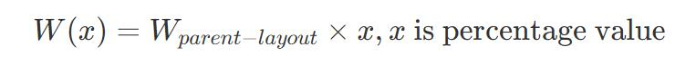
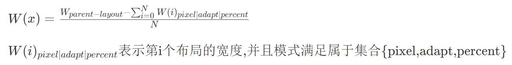
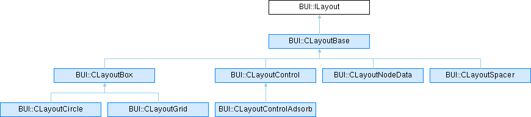
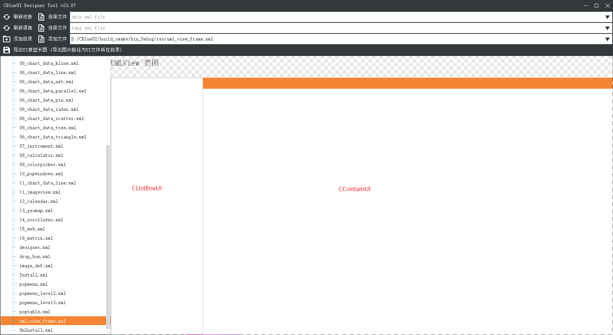

基本原理与重要算法
在窗口上的控件，被定位为一个带有区域等属性的矩形。也称为抽象控件。抽象控件并不能直接响应系统外设消息。需要内部做重定向处理。转换为内部私有消息协议。
抽象控件定位算法
通过鼠标坐标（x,y），与控件逐个比较。直到匹配完成。但是远不止于此。试想当控件越来越多时，匹配带来的开销会越来越大。
这时引入位置优先匹配算法：根据鼠标的行为，总是在附近区域活动。当之前已经定位到某一控件A时，下一次还在A的概率，大于其它控件。优先匹配A和A附近的控件,提高命中率。到这里就结束了吗？位置优先匹配算法可以提高效率。但是当用户鼠标本身没有任何规律可言怎么办？控件定位的遍历方法是树的中序遍历。先匹配自己，然后匹配子节点。基于这样的规则。当子节点过多时，适当增加父节点，可以减少匹配次数。从而提高速度。
布局算法
布局分为简单布局和容器布局。计算布局对象在视窗下的宽度和高度的方法。有以下几种布局方式。
容器布局类型
元素布局类型
- FixedValue:固定的像素宽度
- Percentage:宽度等于在父容器中宽度（高度）的百分比。比如父容器的高度是 W，百分比为30。宽度计算公式等于 
- AdaptFill:等长自适应填充.事先统计fill类型的个数Count。

- AdaptSelf :由布局对象根据属性来确定大小。比如文本宽度，图标大小
示例
水平布局对象
<hLayout Layout="fill, 300" Align="vcenter|top|bottom" layout-revers="false" padding="0,0,0,0">
</hLayout>
垂直布局对象
<vLayout Layout="fill, 300" Align="center|left|right" layout-revers="false" padding="0,0,0,0">
</vLayout>
层叠布局对象
<LayeredLayout Layout="fill, 300" Align="vcenter" layout-revers="false" padding="0,0,0,0">
</LayeredLayout>
- name:布局标识符
- layout:表示元素的布局类型, fill,300:表示水平平铺，垂直高度为300的布局。
- align:在父容器下，的对齐方式。需注意，在水平布局容器里。水平对齐方式实际由容器接管，所以只有垂直对齐方式生效
- layout-revers:容器反向布局
- padding:容器内边距
- cursel:层叠布局中优先展示的布局名称
设计类图

运行机制
如果您了解web浏览器工作机制(解析html)。这将有助于理解CBlueUI。类似的CBlueUI将xml格式的ui文件，解析成一个个控件。
加载过程示意图
控件数据结构图
绑定事件
CBlueUI把绑定事件足够简化，开发者不需要记忆，鼠标按下，鼠标释放，鼠标移动等消息。 如果开发者，需要截获响应这部分消息，框架保留了截获消息的接口。这不是一个好的方式。
抽象定义:当控件所表征的状态或者数据发生变化时，事件需要被执行。
在CBlueUI中每一个控件和单元格都可以绑定事件。
BindAction为控件提供了绑定处理函数的接口。 下面是一段滑块控件在值发生改变时，将值赋值给另外一个进度条控件，实现同步功能
CSliderUI* ui_silderctl = NULL;
if (ui_silderctl)
{
auto lamda = [ui_silderctl, ui_progress]() {
double va = ui_silderctl->Value();
for (int i = 0; i < 3; ++i)
if (ui_progress[i])
ui_progress[i]->SetValue(va);
};
std::shared_ptr<IActionNotify> action = std::make_shared<FunctorAction<> >(lamda);
ui_silderctl->BindAction(action);
}
资源文件语法格式
首先看一个简单的例子，详细看里面的注释内容。
在例子中每一个元素都有一个id属性。id是资源唯一标识符。在UI文件中可以通过id找到资源对象。
比如设置控件的字体 font="title"
share-res.xml
<?xml version="1.0" encoding="utf-8" standalone="no" ?>
<ui>
<Font shared="true" id="title" font-family="宋体" font-Weight="11" default="true"/>
<Color id="colors_white" normal="0xffffff" highlight="0xFF8613" selected="0xFF8613" disable="0xffffff"/>
<linearColors id="nodeedit_colors" size="1024" model="hsv" c1="hsv(201,100,79)" c2= "hsv(201,63,98)"/>
<StopColors id="blue123" size="512">
<stop offset="0%" color="hsv(0,100,96)" opacity="1"/>
<stop offset="30%" color="hsv(108,100,96)" opacity="1"/>
<stop offset="60%" color="hsv(220,100,96)" opacity="1"/>
<stop offset="90%" color="hsv(320,100,96)" opacity="1"/>
<stop offset="100%" color="hsv(360,100,96)" opacity="1"/>
</StopColors>
<linearGradient id="bru_nodeedit_nor" x1="0%" y1="0%" x2="0" y2="100%" color="nodeedit_colors"/>
<radialGradient id="radial_blue" cx="50%" cy="50%" r="50%" fx="50%" fy="50%" color="blue"/>
<conicGradient id="conic_blue" cx="50%" cy="50%" angle-start="-20" color="blue"/>
<Brush id="gstyle_btnblue" normal="bru_btnblue_nor" highlight="bru_btnblue_hot" selected="bru_btnblue_hot" disable="bru_btnblue_nor"/>
<GImage id="5" url=".././res/Image/分割入位.png"/>
<GImageIconSingle id="0" url=".././res/Image/IMG_0118.JPG" frames="1" layout="vertical" source-list="0,0,0,0"/>
<GImageIconMulti id="button:add" normal=".././res/Image/favourite_normal.png"
highlight=".././res/Image/favourite_normal.png"
selected=".././res/Image/favourite_normal.png"
disable=".././res/Image/favourite_disable.png"/>
</ui>
UI文件语法格式
还是来看一个标准窗口的模板示例。详细看里面的注释内容。 main-frame.xml
<?xml version="1.0" encoding="utf-8" standalone="no" ?>
<UI size="1200,700">
<vLayout Layout="fill,fill">
<Spacer Layout="fill,4"/>
<Hlayout Layout="fill,30">
<Control Class="CLabelUI" position="{0,0,100,100}" Name="title" Layout="fill,fill" Font="3" text="UMLView 类图" textstyle="normal:#fcfcfc" labeltype="label"/>
<Spacer Layout="30,fill"/>
<Control Class="CButtonSysUI" Name="minbtn" Layout="30,fill:25" sysType="min"/>
<Control Class="CButtonSysUI" Name="maxbtn" Layout="30,fill:25" sysType="Max"/>
<Control Class="CButtonSysUI" Name="closebtn" Layout="30,fill:25" sysType="close"/>
</Hlayout>
<Spacer Layout="fill,25"/>
<Hlayout Layout="fill,fill">
<Control Class="CListBoxUI" Name="macdeskui" Layout="250,fill:40" colCount="2" width_item="100" height_item="100" interval='5' scroll-autohide="true"/>
<Control Class="CContainerUI" Name="uml_container" Layout="fill,fill" style="notitle" drag="none" back-show="always"/>
</Hlayout>
</vLayout>
</UI>
用设计器查看一下效果

{kind=link}
{kind=link}
{kind=link}